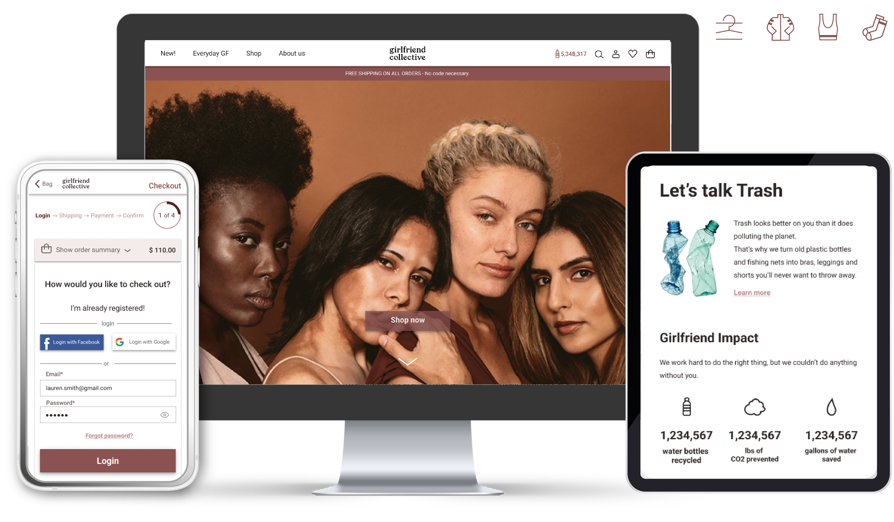
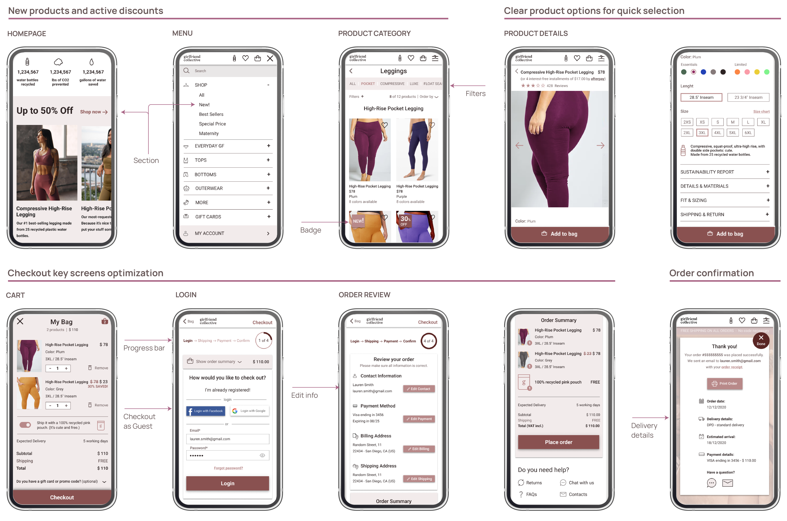
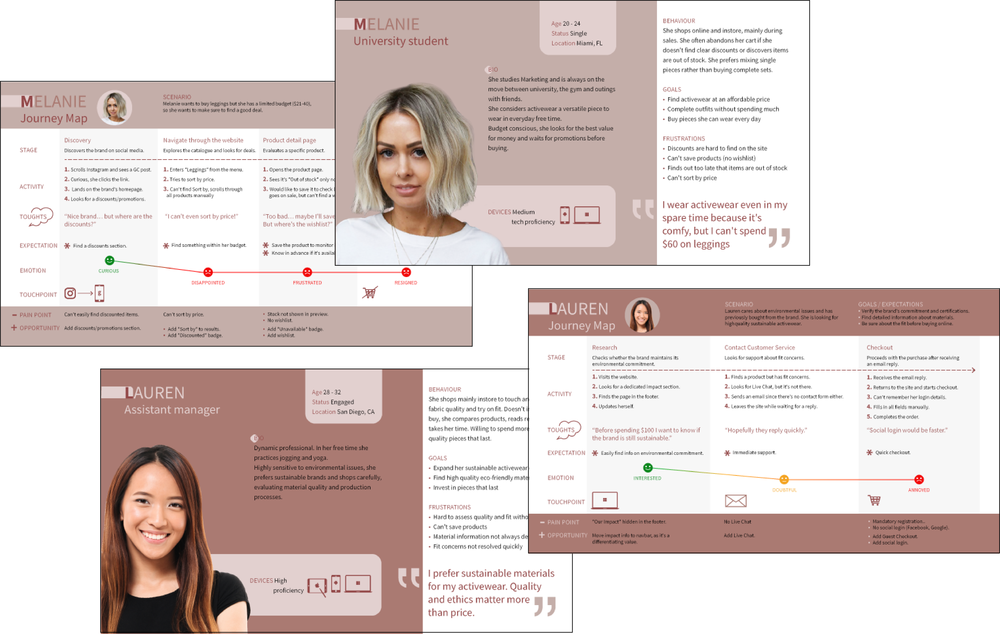
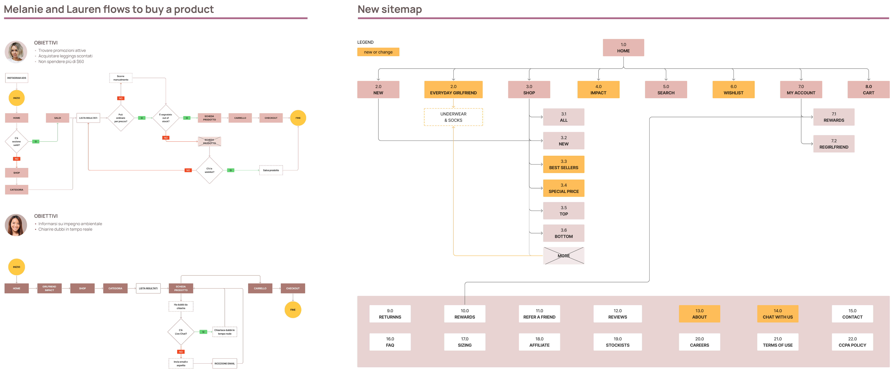
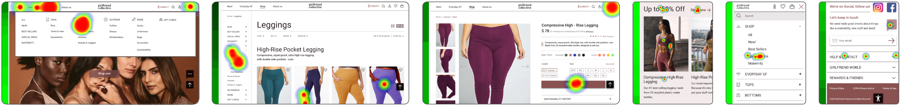

Il brand è inclusivo ma tradisce quella promessa al checkout
Girlfriend Collective è un eCommerce di activewear inclusivo e sostenibile. Obiettivo: Rimuovere le barriere nel flusso d'acquisto dello store online, dalla ricerca del prodotto al checkout.
Ruolo: End-to-end Product Designer (UX/UI).
Timeline: 5 settimane.

BUSINESS PROBLEM
Girlfriend è un brand americano che produce activewear in plastica riciclata, costruito su inclusività e body positivity.
È diventato virale con una campagna su Facebook
"Condividi il sito con un amico per ricevere un paio di leggings gratis": 10.000 ordini in 24 ore, stock esaurito.
Eppure l'e-commerce contraddice questa storia.
Gli sconti sono invisibili, i prodotti esauriti non sono segnalati, non ci sono wishlist, live chat né ordinamento dei risultati
e il checkout richiede la registrazione senza social login, nemmeno Facebook, il canale che ha reso famoso il brand. Target: Millennials e Gen Z sensibili all'impatto ambientale.
SOLUZIONE & RISULTATI
| Il brand promette inclusività.
La UX la estende all'interfaccia.
Sconti visibili
con uno slider in homepage, una pagina dedicata e dei badge.
Wishlist e Live Chat
per supportare la decisione e favorire la conversione.
Guest checkout and Login Social
per rimuovere le barriere alla registrazione.

REVISIONE EURISTICA & ANALISI COMPETITOR
| 5 violazioni euristiche che nascondono le informazioni necessarie per decidere
Tramite un'analisi euristica ho individuato 5 violazioni che nascondono le informazioni necessarie per decidere.
Le due più gravi: promozioni nascoste, senza etichette né sezione dedicata
e nessuna possibilità di ordinare i prodotti per prezzo, popolarità o novità.
Ho poi confrontato il sito con 8 competitor statunitensi di activewear sostenibile:
7 su 8 mostrano le offerte in modo chiaro. Girlfriend no.
8 su 8 permettono di ordinare i risultati. Girlfriend no.
Solo 3 su 8 hanno una funzione preferiti. Un gap ma meno diffuso.
Range di taglie Girlfriend ha la più ampia e solo 2 competitor si avvicinano.
L'inclusività era il punto di forza di Girlfriend Collective.
USER RESEARCH, PERSONAS & JOURNEY
| Una shopper attenta all'ambiente che deve comunque giustificare 60 $
Ho sottoposto un questionario a 54 donne tra 20-40 anni residenti negli Stati Uniti:
53% è attenta all'ambiente, e la sostenibilità crea fiducia nel brand.
69% acquista in negozio, per provare il prodotto e valutare la vestibilità.
71% acquista ogni 2-4 mesi: acquisti pianificati, non d'impulso.
56% spende 21-40 $ per un paio di leggings.
Gli utenti volevano ragioni per fidarsi dell'acquisto: sconti visibili, preferiti salvati.
Dai dati ho costruito due personas e due journey.
Hanno mostrato dove le persone rinunciano: gli sconti nascosti le fanno uscire dal sito,
l'assenza di ordinamento rende frustrante la navigazione, la disponibilità non segnalata
fa sprecare click e la registrazione obbligatoria allunga il checkout<./p>

USER FLOW & SITEMAP
| La nuova architettura dell'informazione ha risolto
i pain point emersi nei journey e negli user flow
Findability Sconti, disponibilità e ordinamento resi visibili.
Supporto alla decisione Wishlist per salvare i prodotti e live chat per risolvere i dubbi in tempo reale.
Checkout Guest Checkout e Login Social.

TEST DI USABILITÀ
| Le fix hanno funzionato davvero? Sì
Ho testato il prototipo con 5 donne tra i 25 e i 43 anni su quattro task distribuiti tra desktop e mobile:
Trovare un prodotto specifico
Completare il checkout
Contattare il supporto
Risultati:
Meno di 1 minuto sia per la ricerca del prodotto sia per il checkout su desktop.
meno di 12 secondi per trovare le sezioni sconti e il servizio clienti su mobile.
4 su 5 hanno trovato gli sconti dallo slider in homepage, solo 1 dalla navbar
e solo 1 ha usato la Live Chat, che quindi ha bisogno di più visibilità, ad esempio con un pulsante sticky.

UI KIT
| Inclusività nelle taglie e nel design
La palette della UI usa tonalità della pelle e rispetta gli
standard di accessibilità WCAG, così l'inclusività si vede anche nell'interfaccia.